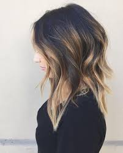
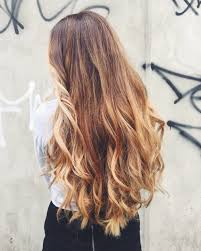
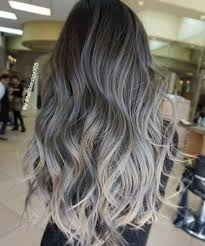
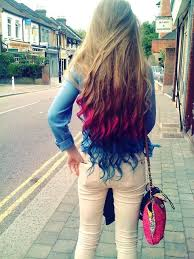
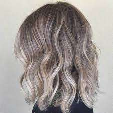
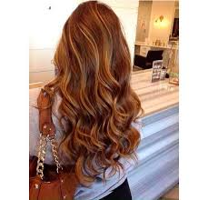

MECHAS CALIFORNIANAS
Ofrecen una transición de color; las raíces se muestran oscuras,
a la mitad el pelo se observa un tono castaño y en las puntas el cabello es rubio. |

OMBRE HAIR
En esta técnica, la parte superior es de un color totalmente diferente a las puntas,
generalmente la transición de tono es a la altura de la mandíbula y a partir de ahí
el cambio es parejo en todo el cabello, no solo en puntas.
|

MECHAS TEXANAS
Son una versión del ombré hair y la diferencia fundamental radica en la colocación
de las mechas. En el ombré hair se aplica en los cabellos exteriores, mientras que las
mechas texanas quedan por debajo del cabello. El efecto también es degradado y
comienza a partir de la altura de la nariz, pudiendo mezclar cuatro tonos diferentes de forma sutil.
|
}
TIE DYE
Es una de las tendencias más atrevidas, consiste en teñir el cabello de varios colores al
mismo tiempo e incluso diseñarlo para que quede decorado con figuras.
|

SHATUSH
Esta decoloración tiene el objetivo de aclarar el cabello lo más natural posible,
dejando las raíces más oscuras, mientras que las puntas y los mechones más largos
deben iluminarse pero imprimiendo un color degradado un par de tonos.
|

BALAYAGE
Es una práctica muy artística la decoloración, se realiza a mano alzada y no se usa
papel de aluminio, razón por la cual la mecha no queda opaca sino muy brillante y
natural, sumándole que son menos abrasivas para el cabello y requieren menos mantenimiento.
|